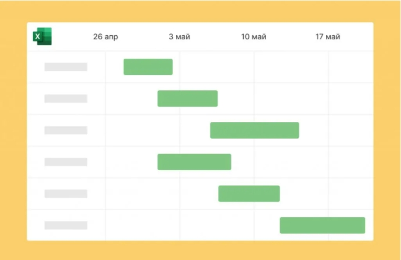
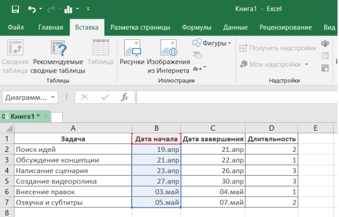
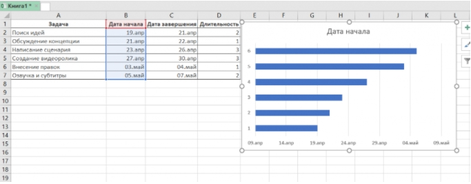
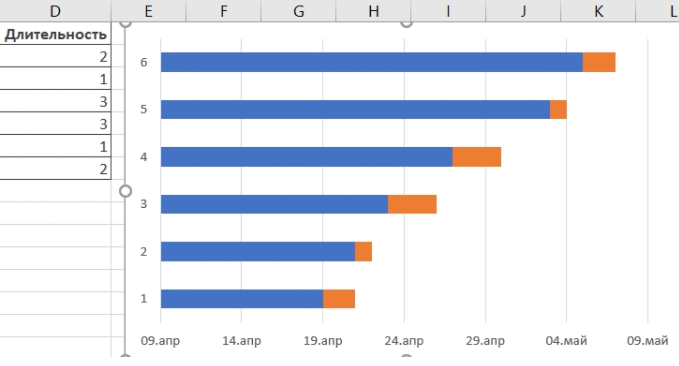
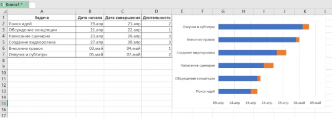
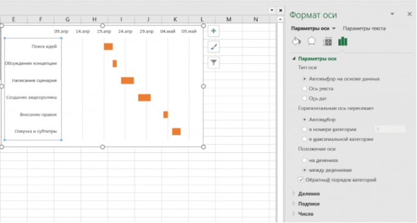
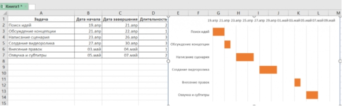

Как построить диаграмму Ганта в Excel: Инструкция для Новичков

Кроме привычных возможностей, Excel позволяет решать и не самые тривиальные рабочие задачи. Например, с помощью этого инструмента начинающие проектные менеджеры могут построить диаграмму Ганта для визуализации рабочего процесса.
В этот статье мы напомним вам, что такое диаграмма Ганта, а также пошагово продемонстрируем, как построить диаграмму Ганта в Excel.
Что такое диаграмма Ганта
Диаграмма Ганта — это инструмент для визуализации рабочего процесса. Он помогает планировать проекты, управлять ими, а также структурирует рабочие процессы.
График назван в честь Генри Ганта — американского инженера, благодаря которому этот метод планирования стал известен на весь мир.
Перед вами классический пример диаграммы Ганта, которая представлена в виде столбчатого графика и выглядит так:
По вертикали вы можете увидеть задачи в хронологической последовательности. Все они должны быть выполнены для успешного завершения проекта.
По горизонтали расположена временная шкала или таймлайн. Он помогает понять, сколько времени запланировано на каждую из задач, а также на весь проект в целом.
Между осями диаграммы находятся горизонтальные полосы, которые изображают задачи. Длина полос зависит от времени, необходимого на выполнение каждой из задач.
Как построить диаграмму Ганта в Excel
Как мы уже рассказывали выше, диаграмму Ганта можно создать с помощью Excel. Инструмент предлагает широкий выбор графиков всевозможных разновидностей: от классических до лепестковых гистограмм.
Однако, шаблона диаграммы Ганта в Экселе никогда не существовало. Поэтому построение графика в программе возможно только собственноручно.
В этой статье мы пошагово продемонстрируем, как построить диаграмму Ганта в Excel 2016. Однако точно таким же образом вы можете создать график в Excel 2007, 2010 и 2013 годов.
Итак, начнем.
1. Внесите информацию о проекте в таблицу
Добавьте в таблицу данные о проекте: его задачах, дате начала и дате завершения, а также о длительности каждой задачи. Последний параметр можно определить по формуле: дата окончания задачи-дата ее начала.

2. Создайте линейчатую диаграмму в Excel
Перейдем к созданию графика в Экселе. Для этого:
- Выделите первый столбец таблицы, начиная от его названия и заканчивая последней задачей.
- Во вкладке «Вставка» выберите линейчатую диаграмму с накоплением.

3. Добавьте в график данные о длительности задач
Чтобы внести в график информацию о длительности задач, нужно:
- Нажать правой кнопкой мыши по диаграмме и кликнуть в меню на «Выбрать данные».
- В новом окне «Выбор источника данных» кликнуть на кнопку «Добавить».
- Далее в окне «Изменение ряда» в поле «Имя ряда» ввести слово «Длительность».
- А в поле «Значения» добавить длительности задач, выделив область от первой ячейки (в нашем случае это D2) до последней (D7). Дважды нажать «ОК».
Теперь, кроме дат начала, в вашей диаграмме будут отображаться и длительности задач. Итог должен выглядеть таким образом:

4. Добавьте в график описания задач
Чтобы в левой части диаграммы вместо цифр появились названия задач, вам следует:
- Кликнуть правой кнопкой мыши на графике, нажать на «Выбрать данные».
- Во вновь открывшемся окне «Выбор источника данных» выделить слева строку «Дата начала», а на панели справа нажать на кнопку «Изменить».
- В появившемся окне «Подписи оси» выделить названия задач таким же образом, как в предыдущем пункте выделялись ячейки с длительностью. Далее нажать «OK». Окно теперь будет выглядеть вот так:

5. Преобразуйте линейчатую диаграмму в диаграмму Ганта
Для того, чтобы гистограмма стала более похожа на диаграмму Ганта, сделаем синие полосы на ней невидимыми. Для этого:
- Нажмите на любую синюю полосу на графике для того, чтобы выделить их все. После кликните по ним правой кнопкой мыши и в контекстном меню выберите «Формат ряда данных».
- В одноименном появившемся окне в разделе «Заливка и границы» выберите «Нет заливки» и «Нет линий».
- На графике слева выделите задачи, кликнув на них правой кнопкой мыши, и выберите «Формат оси».
- В одноименном появившемся окне отметьте галочкой пункт «Обратный порядок категорий» во вкладке «Параметры оси».
Вот и все, задачи вашего проекта теперь расположены в хронологическом порядке, так же, как и в классической диаграмме Ганта.

6. Улучшите дизайн построенной в Excel диаграммы Ганта
Напоследок внесем еще несколько изменений, которые улучшат внешний вид диаграммы Ганта. Начнем с пустого места слева от задач в области графика. Чтобы убрать его, нужно:
Правой кнопкой мыши кликнуть на дату начала первой задачи в таблице. Выбрать «Формат ячеек» — > «Общий». Перед вами появится пятизначное число (в нашем случае 44305), запишите его. Далее важно не вносить никаких изменений и нажать в этом окне на кнопку «Отмена».
Создание графика Ганта в Экселе
Правой кнопкой мыши нажать на область с датами над панелью задач диаграммы. Затем открыть через меню пункт «Формат оси».Во вкладке «Параметры оси» в область «Минимум» вписать число, сохраненное на предыдущем этапе.
Кроме того, во вкладке «Параметры оси» есть возможность изменить основные и промежуточные деления для интервалов дат. Чем меньше длительность проекта, тем меньшее число следует задавать в этих полях.
Ниже вы можете увидеть, какие значения мы внесли для нашего графика.
Напоследок удалим пространство между полосами на диаграмме. Для этого:
Нажмите на любую полоску на графике, чтобы выделить все задачи, а затем кликните по ним правой кнопкой мыши и выберите «Формат ряда данных».
Во всплывшем окне задайте «Перекрытие рядов» на 100%, а значение «Бокового зазора» отрегулируйте на свое усмотрение. Однако важно, чтобы этот показатель был значительно ниже (иногда он может быть равен и нулю).
И вот, наконец, наша диаграмма Ганта в Excel готова.
Создание диаграммы Ганта в Excel — дело довольно времязатратное. Процесс сложно назвать интуитивным, а командное взаимодействие с диаграммой Ганта в Экселе значительно усложняется из-за отсутствия возможности совместной работы над ней.
Поэтому, создание и работа с графиком Ганта в Excel больше подойдет небольшим командам, ведущим простые проекты.
